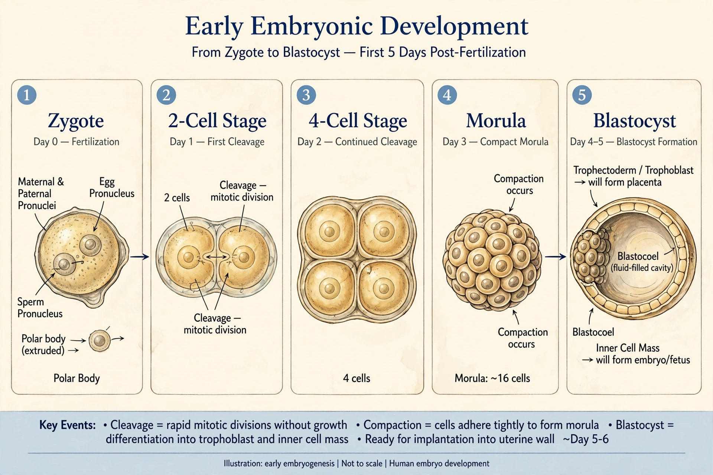

| Embryology | |
|---|---|
| Field | Biology, developmental biology |
| Studies | Prenatal development of gametes, fertilization, embryos and fetuses |
| Key concepts | Gastrulation, neurulation, organogenesis, morphogenesis |

Embryology (from Greek ἔμβρυον, embryon, "the unborn, embryo"; and -λογία, -logia) is the branch of animal biology that studies the prenatal development of gametes (sex cells), fertilization, and development of embryos and fetuses. Additionally, embryology encompasses the study of congenital disorders that occur before birth, known as teratology.
After fertilization, the zygote undergoes rapid cell division (cleavage) to form a blastocyst, which implants in the uterus. Gastrulation reorganises the cells into three germ layers — ectoderm, mesoderm and endoderm — from which all tissues and organs arise. Neurulation follows, forming the neural tube that becomes the central nervous system, and organogenesis builds the body's organs.
Embryological questions were discussed by Aristotle, who proposed epigenesis — the gradual formation of the organism from undifferentiated material. Karl Ernst von Baer discovered the mammalian ovum in 1827 and formulated von Baer's laws of development. Modern embryology has merged with genetics and molecular biology into developmental biology, which studies the genetic control of cell growth, differentiation and morphogenesis.
See also: Developmental biology · Fertilisation · Fetus · Gastrulation